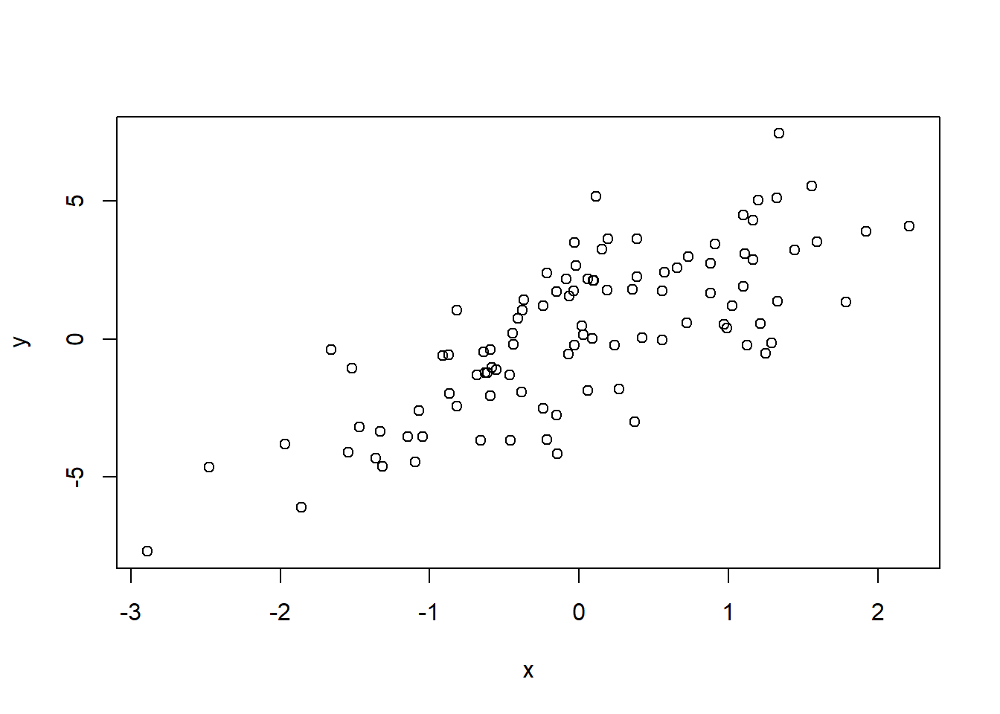
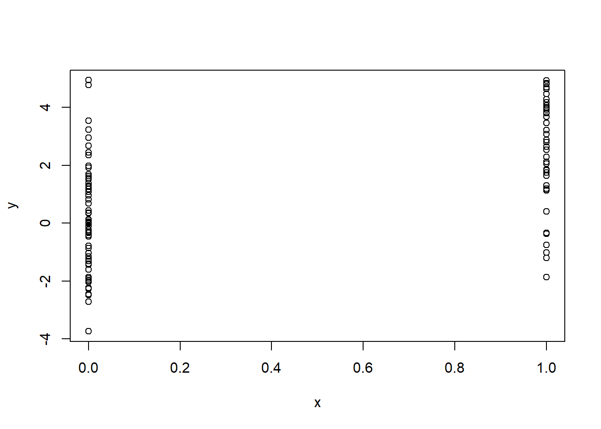
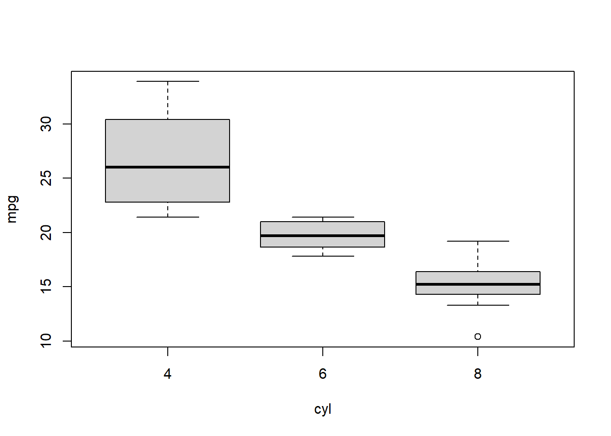

Chapter 7 Simulation and modeling
profiler is R a tool that allows you to check the performance of your functions and would help you optimize
The str() function gives a quick examination of R objects functions and data properties, useful for having a general idea of what an specific expression is.
str(str)
library(datasets)
head(airquality)
str(airquality)
s <- split(airquality,airquality$Month)
str(s) 7.1 Simulation
because R is statistics orientated it has many functions used for creating distributions. Each type of distribution like normal, Poisson, etc. has associated the following prefixes that specify different outcomes.
- d: density
- __r:__random number generation
- p: cumulative
- q: quantile
The following are some examples.
rnorm: normal distribution given a mean and a standard deviation
dnorm: Probability density
pnorm: Cumulative distribution from a normal distribution
*rpois: generates a random Possion distribution given a defined rate
## 5 6 7 8 9
## 65.54839 79.10000 83.90323 83.96774 76.90000Temperature<- airquality$Temp
model <-rnorm(153,mean(Temperature),sd(Temperature))
plot(density(Temperature))Figure 7.1: air density
Figure 7.2: air density
R produces random number that are not entirely random, instead they are made through a pseudo random generator, an algorithm that will map the output to a list of values with a determined probabilistic distribution. A seed will determine the behavior of the algorithm, any seed will always map to the same numbers. It is important to be able to reproduce the exact same results, so the set.seed() function is used to ensure that the random values generated stay the same.
## [1] " set seed to 3"## [1] -0.9619334 -0.2925257 0.2587882 -1.1521319 0.1957828## [1] "seed not set "## [1] 0.03012394 0.08541773 1.11661021 -1.21885742 1.26736872## [1] " set seed to 3 again"## [1] -0.9619334 -0.2925257 0.2587882 -1.1521319 0.1957828We want to create a linear model of the form
\[\begin{equation*} y= \beta _1 + \beta_2 x +\epsilon \tag{7.1} \end{equation*}\]


7.2 sampling
7.3 Code Optimization
R profiler examines how much does it take to run a piece of code
#Rprof("../data/Profile.out")
#source("../code/covid_19.R",echo=FALSE)
#Rprof(NULL)
details<-summaryRprof("../data/Profile.out")## Warning in readLines(con, n = chunksize): incomplete final line found on '../
## data/Profile.out'## self.time self.pct total.time total.pct
## "charToDate" 3.80 73.36 3.80 73.36
## "scan" 0.96 18.53 0.96 18.53
## "as.Date" 0.08 1.54 3.86 74.52
## "FUN" 0.04 0.77 0.08 1.54
## "mget" 0.04 0.77 0.04 0.77
## ".rs.getHelpFromObject" 0.02 0.39 0.24 4.63The time spend be of tow different categories $by.self or by.total the latter has the disadvantages that it records the time full time the top level function tend to spend must of the time can
What
by the example we can see that must of the time is spent on converting data into Date type. we
library(profvis)
7.4 SWIRL practices
As part of this weeks activities the following swirl practices
7.4.1 Looking at Data
when first introduce to a dataset you need to gain a broad understanding of the data, R has many functions usefull for exploratory analysis, pocking around the data and knowing what it is in there.
dim()names()object.size()allows you to know how much space a dataset is occupying in memorysummary()is very useful to get a sense of the data it give properties such as the mean, the median, the number of NA values, etc.table()str()
7.4.2 Simulation
simulate the probability of a flip of a coin with an skewed probability of 70% head and 30% tails. We could use sample with replacement and specify to find the number of times it would land heads making 100 flip, how ever the binomial distribution function rbinom to simulate the expected value, and not only once but the times necessary
## [1] 68Figure 7.3: heads expected of 100 coin flips
## [1] 51 84Generate 100 groups of random numbers each one of 5 vaules generate with a Poisson distribution with mean 10
## [1] 6 5 8 13 9Other distributions: exponential rexp(), chi-squared rchisq(), gamma rgamma()
7.4.3 Base Graphics
lattice, ggplot2 and ggvis
http://varianceexplained.org/r/teach_ggplot2_to_beginners/
http://www.ling.upenn.edu/~joseff/rstudy/week4.html
load data
plot is to scatterplot
“formula” interface plot(dist ~ speed, cars)
xlab = “xlabel”, ylab=“ylabel”, main =“title” sub=“My Plot Subtitle” col=2 color red ?points pch=2
?boxplot
